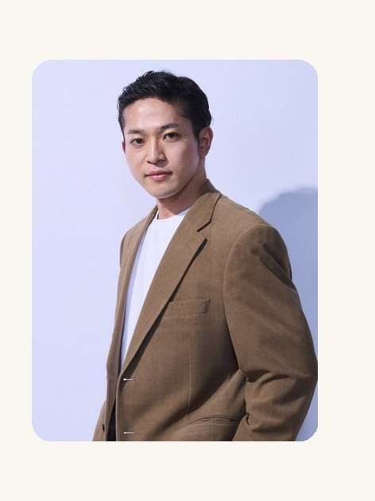

経営側の視点
利益、予算、KPI、コストなど、経営者が何を判断したいのかを整理する。

私について
1996年生まれ、和歌山市出身。智辯学園和歌山高校を経て、筑波大学社会・国際学群を卒業しました。
新規事業開発、法人・個人営業、広告代理店でのプロジェクトマネジメントを経験し、現在は事業会社の経営企画として、業務改革、管理会計、経営指標の設計、データ基盤構築、コスト適正化、情報資産管理などに取り組んでいます。
この支援ができる理由
会社の改善では、経営者の目的と現場の実情の両方を理解しなければ、仕組みは定着しません。
利益、予算、KPI、コストなど、経営者が何を判断したいのかを整理する。
誰が何を入力し、どこで手間がかかり、何が実際には変えにくいのかを確認する。
数字や情報を整理し、自動化や共有の仕組みとして日常業務に落とし込む。
仕事の立ち位置
「もっと早く利益を見たい」
「無駄な作業を減らしたい」
「会社の状況を分かりやすくしたい」
「この入力は必要」
「今のシステムではここまでしかできない」
「この仕事はこの順番でないと回らない」
どちらか一方だけを見て改善するのではなく、両方を確認し、実際に使える落としどころを作ります。
仕事の進め方
問題を聞き、整理し、必要な仕組みを作り、実際に使ってもらい、直すところまでを重視しています。
「AIを入れる」「このシステムを使う」から始めず、まず何が問題なのかを確認します。
最初から会社全体を変えず、効果が出やすい一つの仕事から試します。
高度で複雑な仕組みより、日常業務で使い続けられることを優先します。
特定の担当者や外部業者だけが分かる状態にせず、引き継げる形を目指します。
技術について
目的・課題・現場の状況を踏まえ、運用に耐える仕組みづくりと、その維持・改善を速やかに実行することを第一としています。ツールの導入や置き換えありきのご提案はいたしません。
また、無料または安価で、すぐに導入・活用できる業務効率化ツールや機能のご提案も、適宜行います。
ご相談
「Excelが増えている」「毎月の集計が大変」「どこで利益が出ているのか分からない」といったところからで構いません。
初回のご相談は無料です。